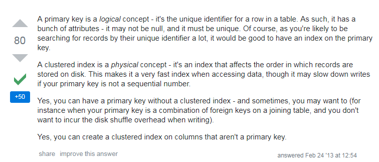

mysql基准测试、读写分离以及聚集索引知识解
这篇博客算是我欠下来的，放着思维导图上整理的MySQL索引和读写分离相关的点，到现在都难得下手写出来，因为MySQL索引很多知识，有时候忘了又记，记了又忘，所以把这些知识点都提前放在思维导图上，想着啥时候写下来，不过由于个（懒）人（病）原（发）因（作），所以一直给耽搁了。
1、基准测试
为啥要先介绍基准测试呢，因为其是忠实反应出mysql在不同系统环境呈现出来的性能差异。
例如在部署完mysql中间件后可以对性能进行重新评估。
使用的工具一般有两种，mysqlslap和sysbench，前者是mysql自带的，后者是一款开源的性能测试工具，功能更强一些，给出的信息更多，一般用后者就好了。
这俩工具使用方法介绍的博客非常多了，这里我就不介绍了，摘出两篇放在这里。
2、读写分离中间件
可能需要一篇更详细的博客：【mysql 读写分离】10分钟了解读写分离的作用
读写分离，基本的原理是让主数据库处理事务性增、改、删操作（INSERT、UPDATE、DELETE），而从数据库处理SELECT查询操作。数据库复制被用来把事务性操作导致的变更同步到集群中的从数据库。
充分利用MySQL主从复制架构下，主从机的MySQL资源，提高读写效率。
一般来说，使用的有mysql-proxy和maxScale，这里我们一般使用后者。
读写分离的优点：
- 由中间件根据查询语法分析，自动完成读写分离；
- 对程序透明，已有程序不需要做任何调整。
缺点：
- 由于增加了中间层所以对查询效率有损耗；
- 对于延迟敏感业务无法自动在主库执行（实时性要求）。
中间件主要解决的是两个问题，读写分离，其中又包含了读的负载均衡。
读写分离要解决的是，如何在复制集群的不同角色上，去执行不同的SQL语句。
读的负载均衡主要解决的是，具有相同角色的数据库，如何共同分担相同的负载。
3、数据库索引
聚集索引
这里引入一篇博客，他可能说的更好点：聚集索引与非聚集索引的总结
以及
stackoverflow上的解答：Relationship of Primary Key and Clustered Index
概念
先点一下，数据库索引中的聚集索引和非聚集索引的概念。
聚集索引的定义：
1 | 数据行的物理顺序与列值（一般是主键的那一列）的逻辑顺序相同，一个表中只能拥有一个聚集索引。 |
非聚集索引的定义：
1 | 定义：该索引中索引的逻辑顺序与磁盘上行的物理存储顺序不同，一个表中可以拥有多个非聚集索引。 |
我们可以这样进行理解，在实际的MySQL中，聚集索引决定表中数据的物理存储顺序（例如，ID 1 和 2逻辑顺序上邻近，存储位置也是邻近），那么表中有且只有一个聚集索引（这里应该很好理解，毕竟顺序的定量条件得是唯一）。同时聚集索引可以由多个列组成。
所以聚集索引上，存储了实际数据的物理地址。
1 | // 创建聚集索引 |
对应的也就说明，非聚集索引，逻辑上顺序存储，但在实际的存储上可能会隔得很远。也就是说聚集索引代表着数据的实际物理地址，也就是说通过非聚集索引在查找数据时，经历两次查找，一次是查找到非聚集索引自身。然后查找主键（聚集索引）。
所以在非聚集索引上，其保存的是指向了实际数据物理地址的聚集索引的值。
更进一步的理解

翻译：
主键是逻辑概念——它是表中行的它是表中行的唯一标识符。因此，它有一堆属性——它可能不是null，而且必须是唯一的。当然，由于你可能会通过唯一键搜索记录，因此在主键上拥有索引会非常好。
聚簇索引是一个物理概念——它是一个影响记录存储在磁盘上的顺序的索引。这使得它在访问数据时成为一个非常快的索引，但如果主键不是*连续序列数字*，它可能会减慢写入速度。（我：在实际应用中，为了不影响写入效率，大多还是以使用自增id为主，即使其没有啥语义）
是的，您可以拥有一个没有聚簇索引的主键——在你可能想要（例如，当你的主键是连接表上的外键组合时，并且你不希望在插入数据时产生磁盘混乱开销）。
是的，你可以在不是主键的列上创建聚簇索引。
innodb如何选择聚集索引
对于innodb，主键毫无疑问是一个聚集索引。但是当一个表没有主键，或者没有一个索引，innodb会如何处理呢。请看如下规则。
-
如果一个主键被定义了，那么这个主键就是作为聚集索引
-
如果没有主键被定义，那么该表的第一个唯一非空索引被作为聚集索引
-
如果没有主键也没有合适的唯一索引，那么
innodb内部会生成一个隐藏的主键作为聚集索引，这个隐藏的主键是一个6个字节的列，改列的值会随着数据的插入自增。
除了Clustered Index之外的索引都是Secondary Index，每一个Secondary Index的记录中除了索引列的值之外，还包含主健值。
通过二级索引查询首先查到是主键值，然后InnoDB再根据查到的主键值通过主键/聚簇索引找到相应的数据块。
例子
1 | create table student ( |
主键id作为聚集索引，name作为非聚集索引（secondary index）。
（1）select * from student where id >5000 and id <20000;
（2）select * from student where name > ‘Alie’ and name < ‘John’;
第一条SQL语句根据id进行范围查询，因为(5000, 20000)范围内的记录在磁盘上按顺序存储，顺序读取磁盘很快就能读到这批数据。
第二条SQL语句查询（‘Alie’, ‘John’）范围内的记录，主键id分布可能是离散的1，100，20001，5000…；
增加了随机读取数据页几率；所以普通索引的范围查询效率被聚集索引甩开几条街都不止；
非聚集索引的精确查询效率还是可以的，比聚集索引查询只增加了一次IO开销。
本文标题：mysql基准测试、读写分离以及聚集索引知识解
文章作者：小师
发布时间：2019-08-26
最后更新：2022-05-04
原始链接：chunlife.top/2019/08/26/mysql索引知识解/
版权声明：本站所有文章均采用知识共享署名4.0国际许可协议进行许可